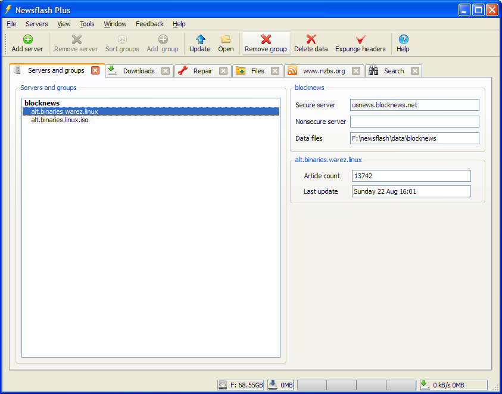

This tab in is the starting point in the application. Over here you can see
the configured news servers and the news groups per each server.
There are no limitations as to how many servers and or groups can be configured.
Deleting data
Delete permanently deletes all of the group data. When this operation completes it is as if no headers
were ever downloaded for this group. A update process following an erase will then start from scratch.
Expunging old headers
Expunge also permanently deletes all of the group data except that it will maintain the previous
group status and article meta information. This means that once you have finished working with the current
set of headers within a group you can Expunge these headers. After the expunge next update will continue
updating the group from the point where you previously finished.
When dealing with groups with high volume of data it is a good idea to expunge the headers every now and then
in order to keep the amount of data manageable.
Updating a group with options
Newsflash Plus provides additional options for updating a group. These options are only available on the first update
or after the data files have been erased. You can invoke updating the group with options through the right click
context menu.
Download volume is a simple way to roughly limit the number of headers to be downloaded.
For example if download volume is set to 60% it means that only 60% of all the headers are downloaded
starting at the newest and progressing towards older headers.
Author and Date are both additional NNTP header fields. They are not normally included
in but if you want you can enable them here per group.
USING LARGE NUMBERS
Sometimes when dealing with very high volume groups there's a need to enable large integers for article numbers.
If you get an overflow error when updating headers for a given group it means that this option should be turned on.
Unfortunately there is no way to know this in advance except take a guess.
This option is not turned on by default because it roughly doubles the data requirements for storing all the
article numbers.